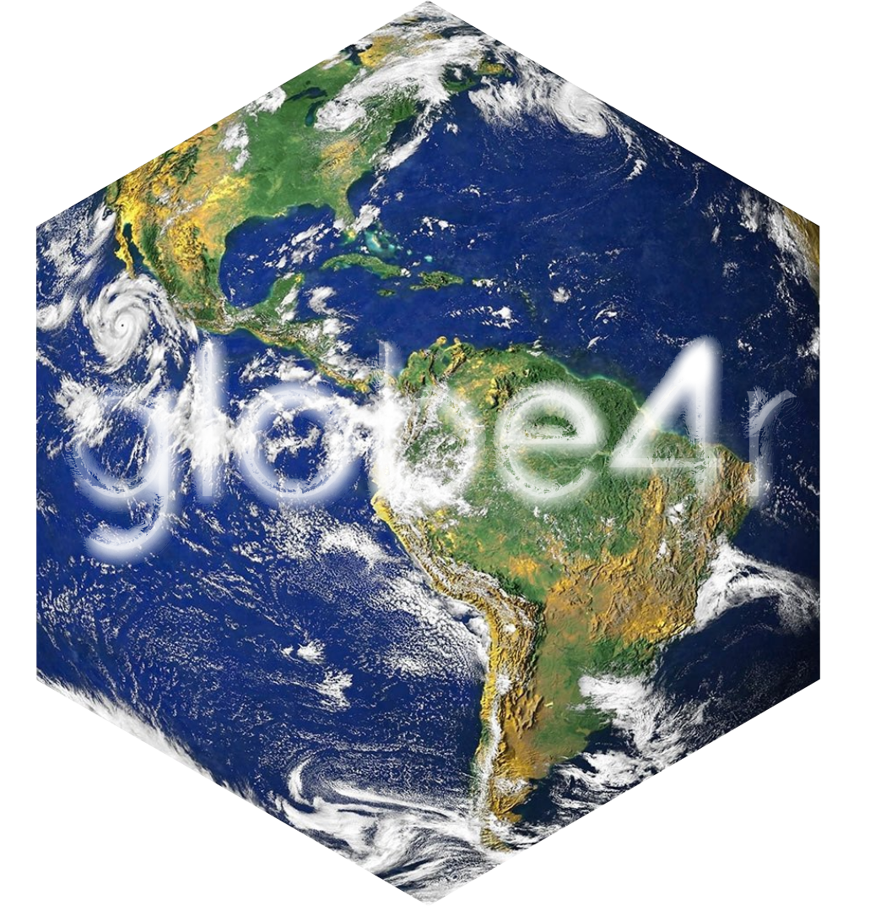

Interactive globes for R via globe-.gl.

Installation
You can install the globe4r from Github:
# install.packages("remotes")
remotes::install_github("JohnCoene/globe4r")Example
This is a basic example which shows you how to solve a common problem:
library(globe4r)
create_globe(width = "100%") %>% # initialise
globe_img_url() %>% # add image background
globe_pov( # position camera
lat = -21,
lon = 179,
ms = 5000
) %>%
globe_points( # add points
data = quakes,
lat = lat,
lon = long,
color = mag,
altitude = depth
) %>%
scale_points_color() %>%
scale_points_altitude(0, .25)